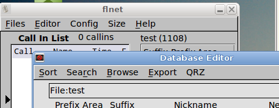

Importing data from pre flnet 7.x
The database file format used in earlier versions of flnet were
based on Xbase, which is similar to dbase. These files must be
converted to the csv flat file format before using the exported file in
flnet 7.x.
Execute the earlier version of flnet. Open the desired dbf file
and then open the Editor dialog and press the "Export" menu button:

The file will be saved in the same location as the original dbf file,
using the same filename but with the extension csv. flnet 7.x
will be able to open and use this file.
Contents